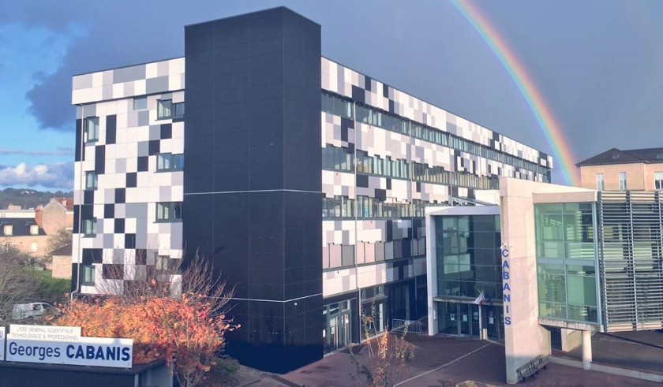
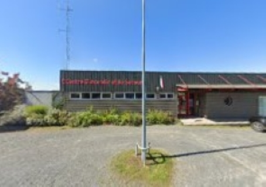
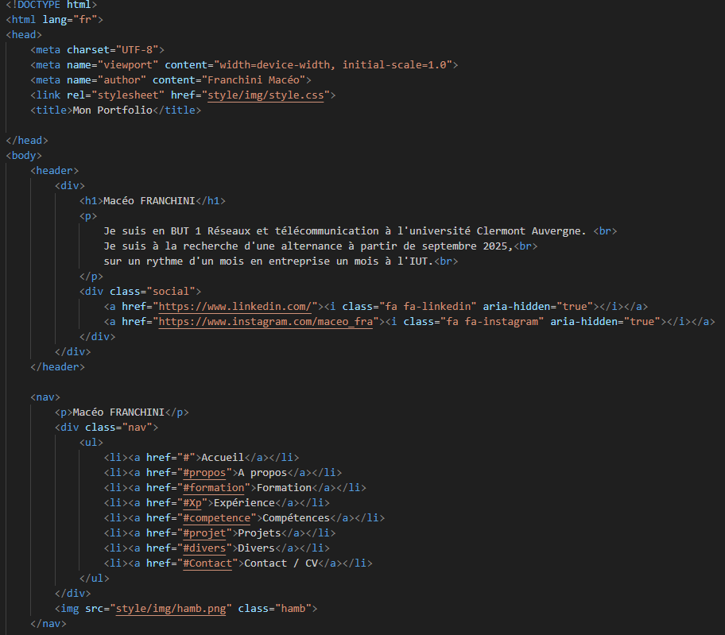
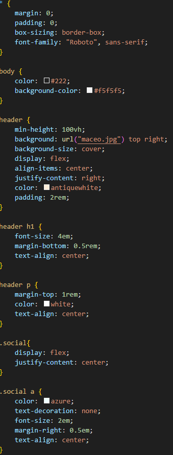

A PROPOS
Je m'appelle Macéo Franchini, je suis étudiant en première année de BUT Réseaux et Télécommunications à l'Université Clermont Auvergne(63). J'ai obtenu mon baccalauréat général en 2024 au lycée Georges Cabanis à Brive-la-Gaillarde(19), avec les spécialités Mathématiques et Numérique et Sciences de l'Informatique (NSI).
J'ai choisi la spécialité mathématique car elle est une nécessité dans les études scientifiques,en effet les mathématiques sont la base de l'informatique avec la cryptographie.J'ai choisi la spécialité Numérique et Sciences de l'informatique car elle permet d'apprendre différents langages de programmation comme Python ou HTML.
Je me suis orienté vers cette formation car elle était cohérente avec mon parcours au lycée. En effet, mes spécialités m'ont permis d'acquérir des compétences utiles pour cette formation, comme la programmation grâce à la NSI ou la logique grâce aux mathématiques.
Je suis quelqu'un de logique et curieux, et j'adore travailler en équipe.
Après le BUT 1, je souhaiterais poursuivre en BUT 2 en alternance.
Formation
Je suis en BUT 1 Réseaux et Télécommunications à l'Université Clermont Auvergne.
Les points forts de la formation :
Cette formation m’a aidé grâce à son aspect pratique. En effet, le fait de pratiquer une matière comme le réseau rend la compréhension beaucoup moins abstraite.
Par exemple, grâce à l’aspect pratique, j’ai appris à configurer des points d’accès ou des switchs en les manipulant, soit sur des logiciels tels que Cisco Packet Tracer,
soit physiquement. Cela m’aurait probablement pris plus de temps à comprendre si je m'étais limité à écouter un professeur expliquer la démarche à suivre.
J'ai effectué un baccalauréat général au lycée Georges Cabanis à Brive-la-Gaillarde avec les spécialités Mathématiques et Numérique et Sciences de
l'Informatique (NSI).
J'ai choisi la spécialité Mathématiques car elle est essentielle dans les études scientifiques. Par exemple, les mathématiques sont
très utiles pour résoudre des équations en physique ou pour la cryptologie en cybersécurité.
J'ai choisi la spécialité Numérique et Sciences de l'informatique après une immersion en seconde, où j'ai pu découvrir la matière grâce à une explication d'un
professeur et à un petit exercice en Python. Cet exercice consistait à coder un programme qui élève à la puissance donnée par l’utilisateur le chiffre deux et
affiche le résultat de cette opération.

Expérience
Durant l'été 2023 et l'été 2024, j'ai travaillé deux semaines, chaque été, en tant que manutentionnaire au sein de l'entreprise Silab. Durant ces deux semaines, j'ai eu l'occasion de travailler en équipe et d'occuper différentes fonctions au sein de l'équipe.
En juin 2024, j'ai obtenu mon Brevet National de Sapeur-Pompier et j'ai donc intégré le centre de secours d'Ayen en Corrèze en tant que pompier volontaire.

J'ai effectué, en seconde (2022), un stage au sein du service informatique de l'entreprise Silab. Ce stage avait une durée de deux semaines, avec un volume horaire de 30 heures par semaine.
SILAB est une entreprise indépendante française spécialisée dans le développement, la fabrication et la commercialisation d'ingrédients actifs naturels destinés à l'industrie cosmétique et dermo-cosmétique.
Au cours de ces deux semaines, j'ai pu découvrir l'infrastructure réseau d'une entreprise et observer, aux côtés des employés, comment ce réseau était administré.
Ce stage m’a conforté dans mon choix de spécialité et de carrière envisagée dans le futur.
Compétences
Programmation : Python, HTML/CSS.
85%
Réseaux : Configuration de réseaux locaux LAN.
80%
Télécommunications : Signaux sinusoïdaux / Liaisons fibres.
80%
Anglais : B1
Projets
Réalisation de réseaux locaux virtuels
Technologies utilisées : Cisco Packet Tracer
Objectif du projet : L 'objectif principal était de réaliser virtuellement des réseaux locaux sur le logiciel Cisco Packet Tracer. Ce travail a été réalisé en binôme lors de 7 séances de 2 heures, sous la supervision d’un professeur.
Travail réalisé : Nous avons d'abord commencé par apprendre la base d'un réseau en utilisant uniquement un switch et 2 ordinateurs. Puis nous avons petit à petit rajouté des éléments comme un routeur ou un serveur. Nous avons également dû comprendre comment fonctionne une adresse IP puisque nous les fictions manuellement aux ordinateurs. Par la suite nous avons installé un serveur DNS afin de pouvoir naviguer simplement sur internet. Nous avons aussi installé des points d'accès wifi pour permettre une connexion sans fil. Une fois toutes ces bases réalisées nous avons construit un grand réseau constitué de plusieurs petits réseaux locaux.
Résultat : Ce projet m'a apporté de solides connaissances sur le fonctionnement du protocole ip ainsi que sur les principes de base d'un réseau local. Ce projet m'a permis d'améliorer ma persévérance car configurer un réseau implique souvent des erreurs d'adressage ip ou des problèmes de routage. À chaque problème il faut donc aller chercher me autre solution sans abandonner. Cette persévérance m'a d'ailleurs aidé dans plusieurs autre projet dont le portfolio.
Sur l’autre face, vous pouvez explorer les fonctionnalités avancées du projet, telles que :
Ce projet m’a permis de mettre en pratique des concepts avancés tout en consolidant ma capacité à résoudre des problèmes techniques.

Réalisation du portfolio
Technologies utilisées : code HTML, code CSS
Objectif du projet : L 'objectif principal était de concevoir et réaliser un portfolio personnel en ligne, mettant en avant mes compétences et projets. Ce travail a été réalisé de manière individuelle sur une période de 6 semaines.
Travail réalisé : Pour la création de mon portfolio, j'ai commencé par concevoir une structure claire et intuitive en HTML. J'ai utilisé le CSS pour styliser les éléments et rendre le site visuellement attrayant. Des polices et des couleurs personnalisées ont été intégrées afin d'améliorer l'esthétique globale.En JavaScript, j'ai ajouté des fonctionnalités interactives comme un menu déroulant pour les ecrans de smartphone et un défilement fluide vers les différentes sections du site. De plus, j'ai développé un système de progression linéaire pour représenter mes compétences. J'ai également créé un design qui s’adapte automatiquement à la taille de l'écran, pour que le site soit facile à utiliser sur tous les appareils, que ce soit sur un ordinateur, une tablette ou un smartphone.
Résultat : Ce projet m'a permis de renforcer mes compétences en développement web, en particulier en HTML, CSS et JavaScript. J'ai appris à créer une interface claire et fonctionnelle, tout en intégrant des éléments interactifs. Ce projet m'a aussi permis de développer ma créativité et ma capacité à innover, notamment lors de la conception du système de progression linéaire pour mes compétences. Ces connaissances m'ont non seulement aidé à finaliser mon portfolio, mais aussi à aborder d'autres projets avec plus de confiance dans mes idées et ma capacité à les réaliser.
Voici des morceaux de code de mon portfolio:


Divers
Je fais, depuis 2016, du VTT au CycloTourisme Objatois (CTO). Avec ce club, j'ai participé à plusieurs compétitions, dont les Championnats de France de CycloTourisme, où j'ai fini 5ᵉ ex-aequo.
je fais depuis 6 ans de la batterie à l'école de musique d'Objat(19). Je fais aussi partie d'un groupe de musique qui s'appel la Banda d'Objat